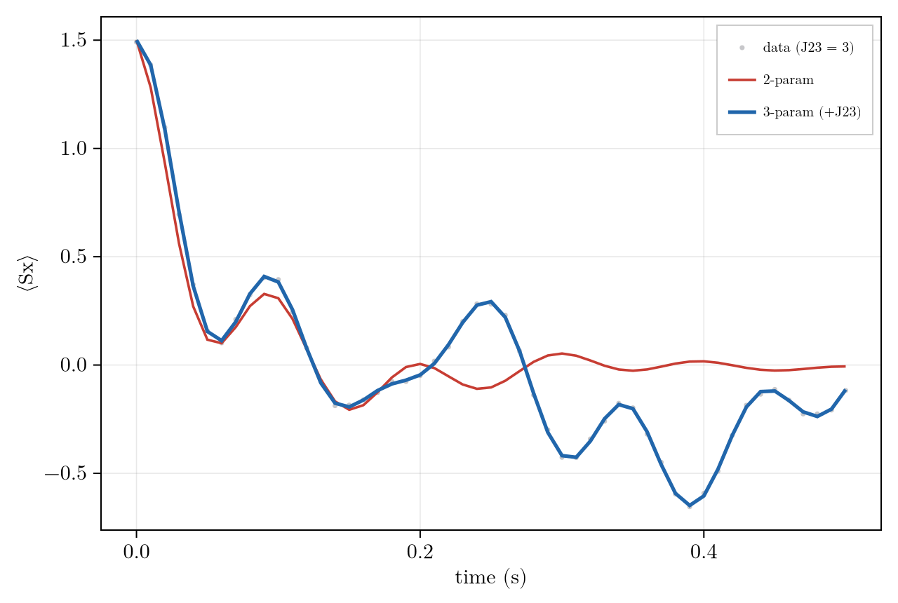
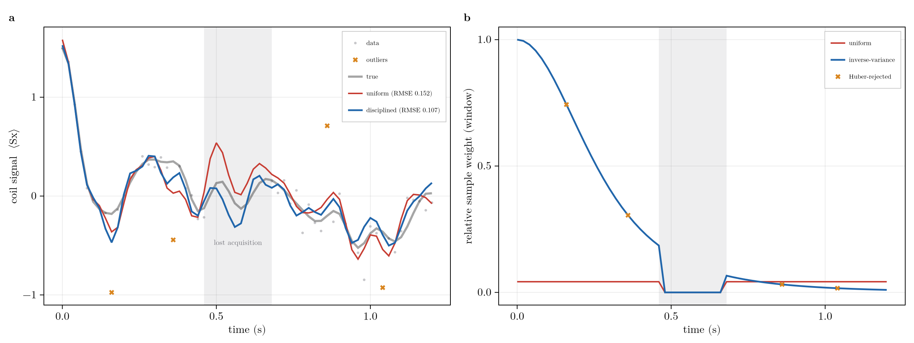

Inference and System Identification
Forward simulation maps a model to a signal; inference runs the arrow backwards. The Inference submodule estimates what the engine normally takes as input, the structural parameters of the generator or the state itself, from measured free-induction decays, with calibrated uncertainty. Parameter estimation and state estimation are the same problem with different unknowns, and both reduce to one object: the Fisher information.
The Inverse Problem
A measured channel is the expectation of an observable along the dynamics. In the restricted basis a density operator is a coefficient vector $\rho \leftrightarrow c$ and an observable a covector $o$, with $\langle O \rangle = o^\top c$, so one noisy FID sample is
\[d_k \;=\; o^\top \, e^{\mathcal{L}(\theta)\, t_k}\, c_0 \;+\; \varepsilon_k , \qquad \varepsilon_k \sim \mathcal{N}(0,\sigma^2),\]
where $t_k$ is the sample time and $\varepsilon_k$ the detection noise, Gaussian with variance $\sigma^2$. The generator is affine in the fitted parameters $\theta$,
\[\mathcal{L}(\theta) \;=\; \mathcal{L}_0 \;+\; \sum_a \theta_a\, G_a ,\]
where $\mathcal{L}_0$ is the fixed drift and each $G_a$ is the superoperator of one named structural term (a jcoupling, a dephasing rate). This is the same build_liouvillian generator the forward solver propagates; inference only asks which $\theta$ produced the data. A Condition bundles one experiment: its modulation $\mathcal{L}$, initial state $c_0$, sample grid, detected channels $o$, and noise weighting. A joint fit shares one $\theta$ across several conditions taken at different fields or offsets.
The Estimator
For Gaussian noise the negative log-likelihood is a weighted least-squares cost, and a prior adds a quadratic penalty (the maximum-a-posteriori, or MAP, estimate),
\[C(\theta) \;=\; \tfrac12 \sum_{k} w_k\, \bigl| m_k(\theta) - d_k \bigr|^2 \;+\; \tfrac12 (\theta-\mu)^\top \Lambda\, (\theta-\mu) , \qquad w_k = 1/\sigma_k^2 ,\]
where $m_k(\theta) = o^\top e^{\mathcal{L}(\theta)t_k} c_0$ is the model, $w_k$ the per-sample weight (the diagonal matrix $W = \mathrm{diag}(w_k)$ collects them), and $(\mu,\Lambda)$ the prior mean and precision. fit minimizes $C$ and reports it as the result's cost. The prior is a GaussianPrior $(\mu,\Lambda)$; a scalar $\Lambda = \lambda I$ is a ridge. For heavy-tailed detection noise, swap the quadratic for the Huber loss $\rho_\delta$ (quadratic within $\delta$, linear beyond), which bounds an outlier's leverage.
Separable structure (VARPRO). When the signal is a sum of components with unknown complex amplitudes,
\[d \;=\; \sum_{m=1}^{M} a_m\, g_m(\theta) \;+\; \varepsilon \;=\; G(\theta)\,a \;+\; \varepsilon ,\]
the amplitudes $a$ are linear in the model, so they can be concentrated out: for any $\theta$ the optimal $a(\theta) = (G^\dagger W G)^{-1} G^\dagger W d$ solves in closed form, leaving a smaller nonlinear problem in $\theta$ alone. This is variable projection (VARPRO). fit with a Separable model spec does this. It fits multi-line or multi-species FIDs where each line's amplitude and phase is a nuisance, and returns the shared frequencies and rates plus the per-condition amplitudes.
The Geometry
Near the optimum, linearize the model: $J_{ka} = \partial m_k / \partial \theta_a$. The Jacobian $J$ gives the Fisher information $F$, and its inverse the Cramer-Rao covariance,
\[F \;=\; J^\dagger W J , \qquad \mathrm{cov}(\theta) \;\approx\; F^{-1} .\]
Both identities are exact for the Gaussian model above; for other noise $F$ is still the right curvature, but $F^{-1}$ is only the leading-order covariance. Three facts then collapse the optimizer, the uncertainty, and the identifiability onto this one matrix:
$F$ is the Gauss-Newton Hessian. The curvature of $C$ is $F$ plus a residual term that vanishes at a good fit, so the Newton step is $\Delta\theta = -F^{-1}\nabla C$. This is a natural-gradient step: the Fisher is the metric on parameter space. Far from the optimum it is stabilized by Levenberg-Marquardt damping $(F + \lambda I)^{-1}$, with $\lambda$ shrinking as steps succeed. The
optimizer = :naturalpath reaches the minimum in a handful of iterations where plain:adamcrawls.The Jacobian is exact. Differentiate the state equation $\dot c = \mathcal{L}(\theta)\,c$ by a parameter; the affine form $\partial\mathcal{L}/\partial\theta_a = G_a$ turns this into a variational equation for each sensitivity $s_a = \partial c/\partial\theta_a$,
\[\dot{s}_a \;=\; \mathcal{L}\,s_a \;+\; G_a\,c ,\]
a linear system the state drives through $G_a$. Propagating the $n_\theta$ sensitivities alongside $c$ (one sweep of $1+n_\theta$ coupled propagations, all under the same $\mathcal{L}$) and reading $J_{ka} = o^\top s_a(t_k)$ builds the Jacobian in a single pass. Because the sensitivities ride the same Krylov propagator as the state, $J$ is accurate to the propagator tolerance; there is no finite-difference step size trading truncation against roundoff. The
jacoption sets how the per-interval sensitivity propagates::forward(first-order propagator derivative $h\,G_a\,e^{h\mathcal{L}}$, the default),:frechet(the exact dense Van Loan block exponential), or:findiff(central differences, the fallback).Identifiability is the spectrum of $F$. Eigendecompose $F = \sum_i \lambda_i v_i v_i^\top$: each eigenvector $v_i$ is a combination of parameters, and its eigenvalue $\lambda_i$ is the information the data carry about that combination, so the error bar along $v_i$ is $1/\sqrt{\lambda_i}$. A large $\lambda_i$ is a tightly pinned combination; a near-zero one is a flat direction the data cannot constrain. The cause is on the output side: a parameter reaches the data only through its sensitivity column $J_{\cdot a} = o^\top s_a$, so if $s_a$ falls outside the observable's reach that column is near-zero and $F = J^\dagger W J$ loses rank. This is the same observable-informed reachability that governs truncation (The Convergence Rate). The sharpest case: two rates that enter only through their sum share one sensitivity, $\partial m/\partial R_1 = \partial m/\partial R_2$, so their Jacobian columns are identical, $F$ is exactly singular, and the flat eigenvector is the invisible difference $(1,-1)$.
Uncertainty and Identifiability
uncertainty returns the Cramer-Rao payload as a NamedTuple: the per-parameter standard errors $\sigma = \sqrt{\mathrm{diag}\,F^{-1}}$, the covariance and correlation matrices, and identifiability = eigen(F). The inverse is taken through the eigendecomposition with a floor, so a rank-deficient $F$ does not throw; a flat direction's variance $1/\lambda$ blows up (capped) instead. A flat direction can be a genuine gauge rather than a failure: in the weak-coupling (high-field) regime the sign of a $J$ coupling is unobservable by nature, to be reported, not clamped away. fit_report renders the estimates $\pm\sigma$ with the flat directions named, and multistart cross-checks: a large spread across starting points is an identifiability warning independent of the Fisher.
Like the other diagnostics, uncertainty and flat_prior take the fit result directly. uncertainty(r) and flat_prior(r) reuse the fit's basis, conditions, estimates, and noise, so there is nothing to re-specify; the (basis, conditions, structural; σ) forms remain for evaluating at a point you have not fitted. Ridge the flat directions and re-fit in one line: fit(basis, conds, structural; prior = flat_prior(r)).
Model Selection
Adding parameters always lowers the residual, so a lower residual alone does not justify them. Model selection weighs fit against complexity. Treat the $n = 2\,(\#\text{complex samples})$ real residuals as Gaussian, with residual sum of squares $\mathrm{RSS} = \sum_k |m_k - d_k|^2$ and log-likelihood $\ell = -\tfrac{n}{2}\log(\mathrm{RSS}/n)$. For $k$ free parameters, info_criteria returns
\[\mathrm{AICc} = 2k - 2\ell + \frac{2k(k+1)}{n-k-1}, \qquad \mathrm{BIC} = k\log n - 2\ell .\]
Both score the misfit $-2\ell$ plus a penalty on $k$: the Akaike criterion with its small-sample correction (AICc), and the Bayesian information criterion (BIC), which penalizes each parameter more heavily ($k\log n$ against $2k$) and so favours simpler models as the data grows. Lower wins; an extra coupling earns its place only when it lowers AICc or BIC, not when it lowers RSS alone.
BIC approximates the Bayesian evidence $Z = \int e^{-C(\theta)}\,\pi(\theta)\,d\theta$, the probability the model assigns to the data after integrating out its parameters; a model pays for the parameter volume it must spend to fit (the Occam factor). One caveat: with few smooth data points the criteria measure how much signal the curve can absorb, not whether the physics is right. A flexible low-parameter curve can win regardless of mechanism, so a discriminating experiment, not a lower AICc, is what validates a mechanism.
Worked Example: Recovering Hidden Parameters
Scale the system to three spins at offsets $[0, 1, 2.5]$, observed at three fields, and fit one noisy $\langle I^+\rangle$ FID per field to a shared parameter set. The coupling $J_{12}$ is pinned tightly: fit recovers it to 0.12% with a Cramer-Rao bar of $\pm 0.005$ Hz. The fit must also report what the data cannot pin. Modelling the single effective dephasing as a sum of a homogeneous and an inhomogeneous rate on the same $\mathcal D[I_z]$ channel asks for two numbers that enter only through their sum, so their difference is a flat direction.
uncertainty finds it. The Fisher spectrum has one eigenvalue at $5\times10^{-11}$ against $\sim\!10^{4}$ for the pinned directions; its eigenvector is the $(-0.71, 0.71)$ difference of the two rates, and their correlation is exactly $-1$. The sum of the two rates is pinned at $1.002$ (true value $1.0$); the split is not. fit_report renders the split as a flat direction rather than a confident zero. Resolving it needs a spin echo, not a better fit.
r = fit(basis, conds, Any[J12 => 2.0, R2 => 0.3, R2 => 0.3]; # two rates on the same D[Iz] channel
optimizer = :natural, iters = 40, bounds = [nothing, (0.0, Inf), (0.0, Inf)], uncertainty = true)
print(fit_report(r; names = ["J12", "R2_homog", "R2_inhom"])) # estimates ± σ, flat directions namedinfo_criteria then asks whether the data justifies a second coupling $J_{23}$. With $J_{23} = 3$ present, the two-parameter model cannot reproduce its beat while the three-parameter model tracks the data:

Fits to data generated with J23 = 3: the 2-parameter model (no J23) misses the second coupling's beat; the 3-parameter model tracks it.
The corrected Akaike criterion then decides both ways (lower wins; the selected model in bold):
| Model | $J_{23} = 3$ present | $J_{23}$ absent |
|---|---|---|
| 2 parameters (no $J_{23}$) | -755 | -2915 |
| 3 parameters (+ $J_{23}$) | -2913 | -2913 |
When $J_{23}$ is present the three-parameter model wins; when it is absent the two-parameter model wins, even though the richer model fits the data equally well, because the extra parameter is not earned.
State Estimation as Dual Inference
Fixing $\theta$ and solving instead for the state $c$ is the same machinery with a linear forward map. Snapshot tomography inverts $M c = y$, whose rows are observable covectors; the Gram $M^\dagger M$ is the state-estimation Fisher, and its rank reports informational completeness (whether the observable set spans the kept basis). When no single time is complete, smooth fuses a whole window through the known propagator $\Phi$,
\[\min_{z}\; \tfrac12 (z-\bar z)^\top \bar\Lambda\, (z-\bar z) \;+\; \tfrac12 \sum_{k} w_k\,\bigl(o^\top \Phi(0{\to}k)\,z - y_k\bigr)^2 \quad \text{s.t.}\quad \mathrm{Tr}\,\rho = 1 ,\]
where $z$ is the window-start state, $\Phi(0{\to}k)$ propagates it to sample $k$, $\bar z$ and $\bar\Lambda$ are the prior mean and precision, and $a_k = \Phi(0{\to}k)^\top o$ is the observable pulled back to the window start. smooth returns $z$, the smoothed trajectory, and the posterior information $\Lambda = \bar\Lambda + \sum_k w_k\, a_k a_k^\top$. That posterior is the arrival cost carried into the next window by the recursive filter (moving_horizon / step!), advanced each step by folding in the departing measurement and a process-noise-regularized one-step prediction. The arrival cost is a GaussianPrior in information form $(\eta,\Lambda)$ (mean coordinate $\eta = \Lambda z$), and its update $(\eta,\Lambda) \mathrel{+}= (J^\top W y,\, J^\top W J)$ is Bayes' rule for a Gaussian. Recursive moving-horizon estimation is Bayesian updating.
The duality is exact:
| Parameter estimation | State estimation | |
|---|---|---|
| Unknown | structural $\theta$ (couplings, rates) | state $c$ (density-matrix coefficients) |
| Forward map | nonlinear $o^\top e^{\mathcal{L}(\theta)t}c_0$ | linear $o^\top \Phi(t)\,c$ |
| Estimator | fit | tomography / smooth / moving_horizon |
| Fisher | $J^\dagger W J$ | $M^\dagger W M$ (observable Gram) |
| Prior | GaussianPrior (ridge) | GaussianPrior (arrival cost) |
Worked Example: Smoothing and Windowing
A single coil records the complex free-induction decay (the quadrature pair $\langle S_x\rangle$ and $\langle S_y\rangle$) of a coupled three-spin system, and smooth reconstructs the state trajectory by fusing the whole record through the known dynamics. Each sample enters weighted by its precision, and that per-sample weight is the window: zero where there is no data, small where the data is noisy, smaller still where it is an outlier. One realistically degraded FID makes the point. Its SNR decays across the record, a middle window is lost to a gap, and a few samples are corrupted; the same smoother reconstructs it under two windows.
Wuni = fill(1/mean(σ.^2), 2, length(ts)); Wuni[:, gap] .= 0.0 # uniform window (one average precision)
Wdis = vcat((1 ./ σ.^2)', (1 ./ σ.^2)'); Wdis[:, gap] .= 0.0 # inverse-variance window; zero in the gap
r_uni = smooth(basis, mod, ts, ops, fids; weights = Wuni) # uniform + L2
r_dis = smooth(basis, mod, ts, ops, fids; weights = Wdis, loss = :huber, delta = δ) # inverse-variance + robust
One degraded FID (decaying SNR, a shaded gap, marked outliers) under two windows. (a) The uniform window (flat weight, L2) is pulled off the truth by the noisy tail and outliers and leaks a false excursion into the gap; the disciplined window (inverse-variance + Huber) tracks it, ~1.4x tighter in RMSE. (b) The same windows as weights: flat uniform versus inverse-variance 1/σ²(t), both zeroed across the gap, outliers Huber-rejected.
Classical versus Quantum
Inference can also ask whether the data needs a quantum model at all. leggett_garg is the temporal cousin of a Bell inequality: for a dichotomic observable $Q$ measured at three times, a macrorealist model (a definite value at all times, noninvasively read) obeys
\[K_3 \;=\; C_{12} + C_{23} - C_{13} \;\le\; 1 ,\]
while quantum mechanics reaches the Lüders bound $3/2$. The two-time correlators come from the quantum regression theorem evaluated through the propagator,
\[C(t_i,t_j) \;=\; \frac{\mathrm{Tr}\!\left[Q\, e^{\mathcal{L}(t_j-t_i)}\!\left(Q\,\rho(t_i)\right)\right]} {\sqrt{\langle Q^2\rangle_i\,\langle Q^2\rangle_j}} ,\]
the normalization making $K_3$ scale-free. The regression theorem is a Markovian statement: it holds only when the same generator $\mathcal{L}$ that advances the state also advances two-time correlators, which requires a memoryless bath. A non-Markovian environment breaks the factorization and the correlator above no longer follows from $e^{\mathcal{L}t}$ alone. A freely precessing spin with equally spaced times at $\omega\tau = \pi/3$ gives $K_3 = 3/2$ exactly; adding decoherence on the measured axis drives $K_3$ monotonically below $1$, the decoherence-induced quantum-to-classical transition. A measurement with noise $\sigma$ yields a posterior $P(K_3 > 1)$, the probability the data refutes macrorealism.
Leggett-Garg tests the measurement structure; it witnesses a single precessing spin. A complementary question is whether the dynamics needs coherence. Split a $J$ coupling into a secular part $J\,I_{1z} I_{2z}$, a classical conditional Larmor frequency (the multiplet splitting), and a flip-flop part $J(I_1^+ I_2^- + I_1^- I_2^+)$, which coherently transfers polarization and has no classical-probability model. That boundary is the high-field-to-ZULF axis: secular at high field (nearly classical), flip-flop dominated at zero field (irreducibly quantum).
The Leggett-Garg bound assumes noninvasive measurability. The regression correlator above is the ideal (no-collapse) prediction; a real projective implementation faces the measurement-disturbance loophole, addressed experimentally by weak or ideal-negative-result protocols.
See the Inference page for the API and the symbol definitions.